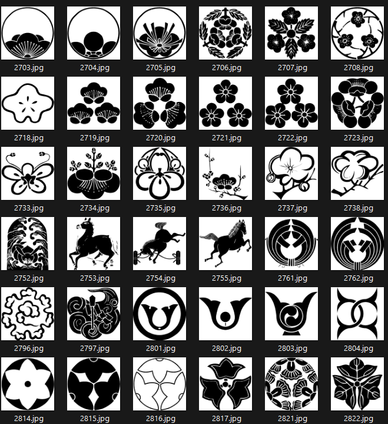
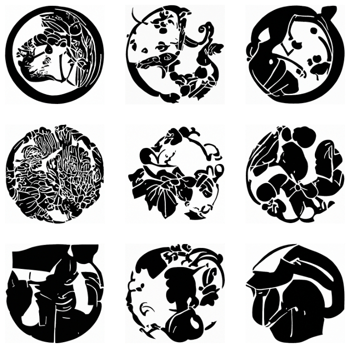
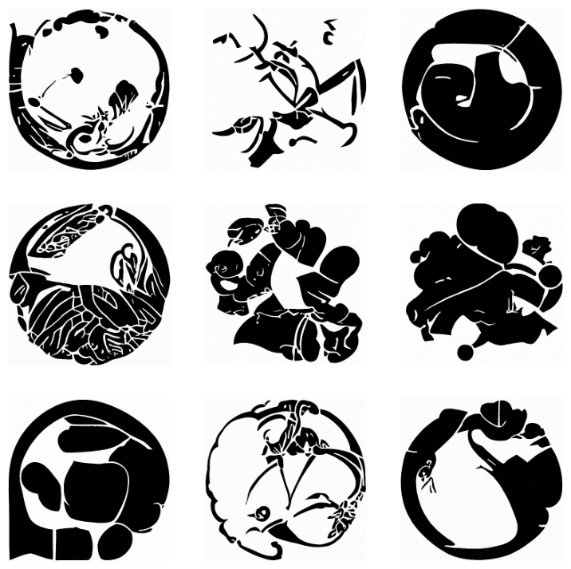
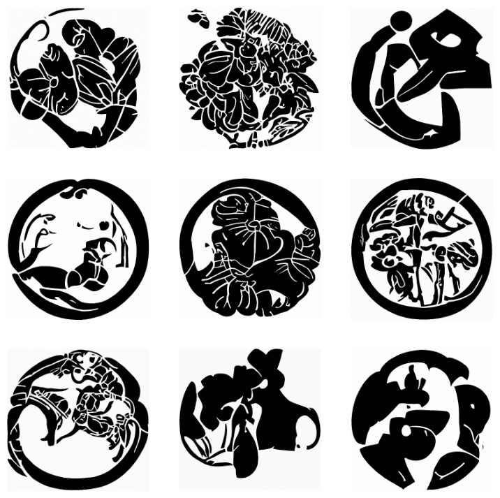

Generating Kamon Designs
Using (DDPM) Denoising Diffusion Probabilistic Models
Last week I began the new ‘From Deep Learning Foundations to Stable Diffusion’ course , which is part 2 of FastAi’s Practical Deep Learning for Coders series. The first lesson kicked off quickly, getting into the sizzle of Stable Diffusion, the phenomenal model which empowers people to generate images of fantastic beauty on moderately powered home computers.
I decided to train my own Kamon generator. I completed building a training set that I had gathered last year for a GAN project. The Kamon Dataset can be found here.

Using this Diffusion_models_with_fastai notebook from Tanishq Abraham, with a slight modification to use my Kamon dataset (instead of mnist) and adjusting a few settings to fit on my 3090 card.
bs = 16 # batch size
size = 224 # image sizeI also found it was necessary to skip the learning rate finder. ddpm_learner.lr_find() as that process would always run out of cuda memory. For training, I used a learner rate of ‘3e-4’ and pushed fit_one_cycle to 100 epochs.
ddpm_learner.fit_one_cycle(100, 3e-4)On average, training this model took 2.5 minutes per epoch. (Far better than days spent last year trying to do similar with Stylegan2 only to end in model collapse.)
Results
Not the best, but certainly not the worst.
It has managed some nice clean lines, boundary areas and a few motifs, and very little noise. As I learn more I will revisit this project and improve it.
A few batches of generated images. 

